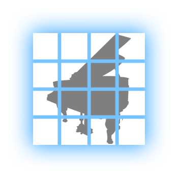
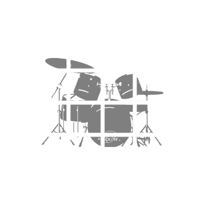
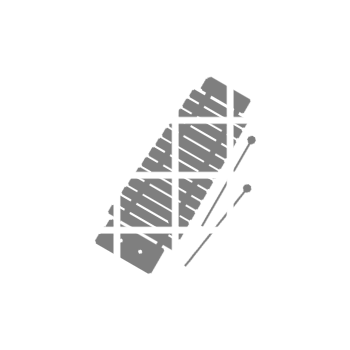

Tone Dead Matrix
You may choose an instrument below to begin.
You may click anywhere on the matrix to play a tune.
You may toggle the selection of the matrix cells.
You may form a spell with a combination of instruments.
clear_all
Purify Matrix
stop
End The World
pause
Pause The World



